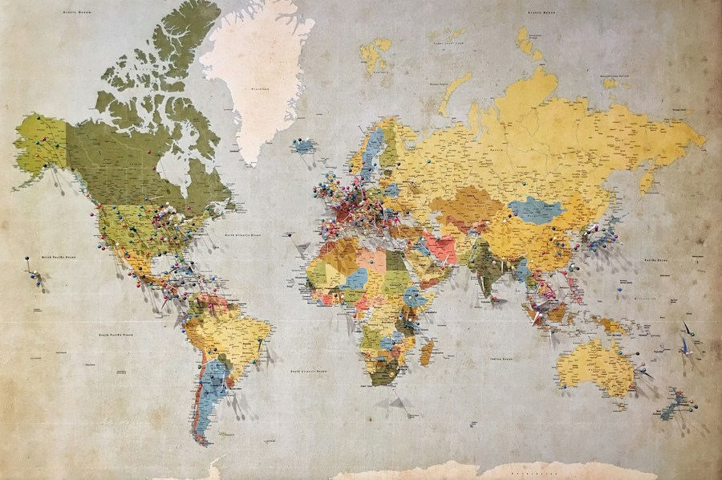

Address Matcher
Reworked the address validation application, increasing the match rate by over 500,000 additional matches
SOFTWARE DEVELOPER · C# / .NET
I build and improve software, solve complex problems, and help teams deliver meaningful solutions.
Better
systems.
Brighter
possibilities.
Building better applications.
Delivering meaningful results.

Reworked the address validation application, increasing the match rate by over 500,000 additional matches
Technical Lead for the Oracle Forms Migration Project, exploring modernization options and path forward

Design, build, and maintain .NET applications and APIs. Improve performance, reliability, and developer experience.
Technical Lead for project to migrate all applications from .NET 8 to .NET 10
Designed and developed a .NET application to retrieve and process Parquet data through APIs, addressing data type limitations and improving compatibility with large numeric values
Improved server maintenance workflows by configuring Royal TS for simultaneous patching, helping streamline repetitive operational tasks across multiple systems.
Worked through deployment and pipeline challenges to support reliable application releases, troubleshoot pipeline configuration issues, and improve production delivery.
Co-run internal C#/.NET user group, covering topics like .NET runtimes, language features, and best practices.
Designed ServiceNow requests to standardize team requests and setup RoyalTS for simultaneous patching.
Help team members grow through mentorship, documentation, and practical solutions.
Experience with on-call support, incident resolution, and maintaining high system availability.
I am a C#/.NET developer who enjoys solving complex problems, modernizing applications, and finding better ways to build and maintain software. I care about writing clean, reliable code, improving processes, and helping teams be successful. I am always learning and enjoy working on challenging projects that make a real impact.
“The function of good software is to make the complex appear to be simple”
- Grady Booch